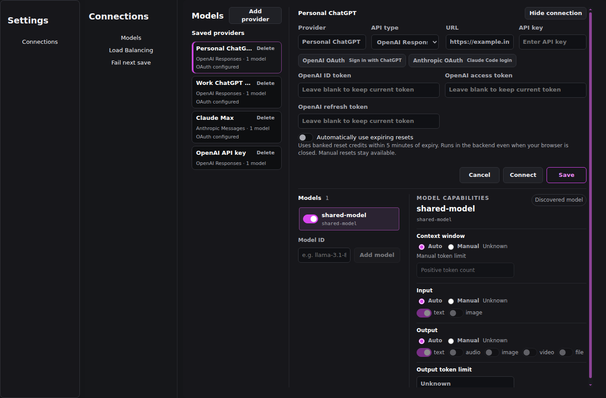
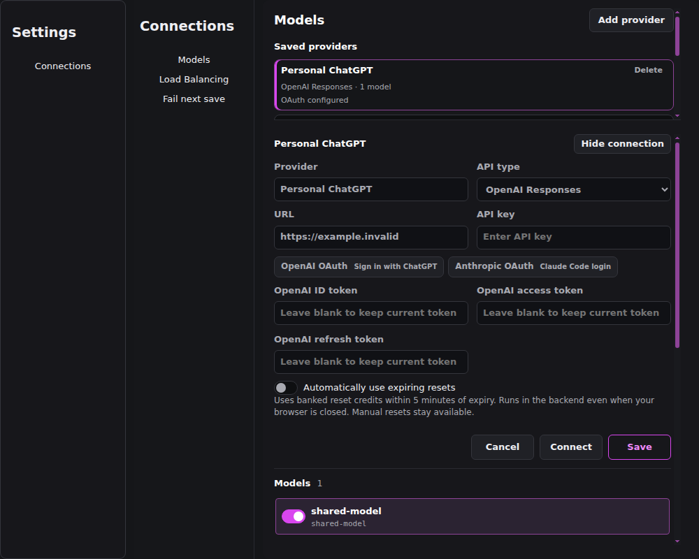
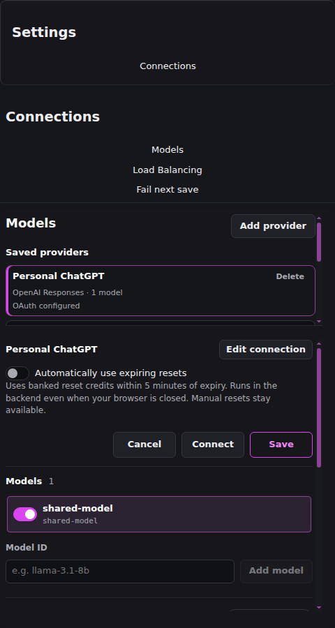
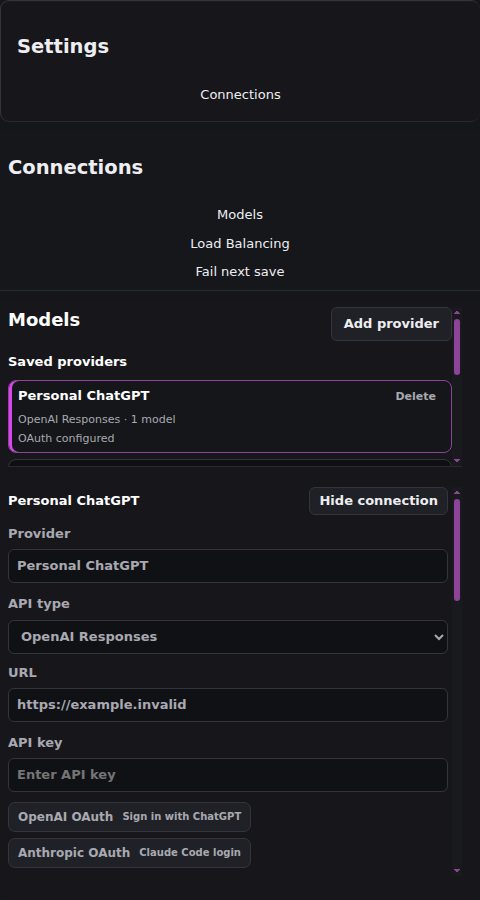
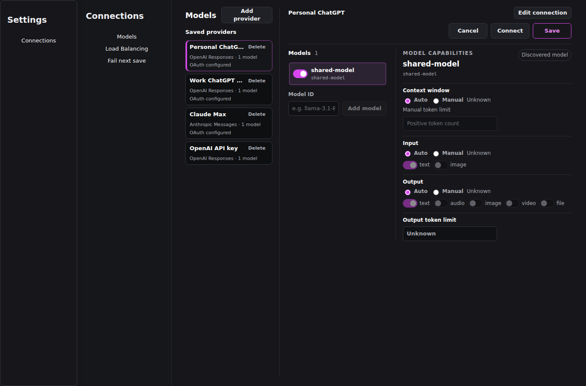
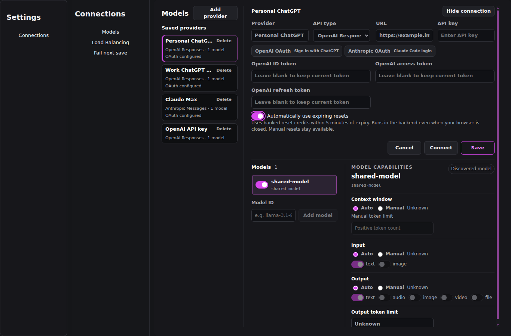
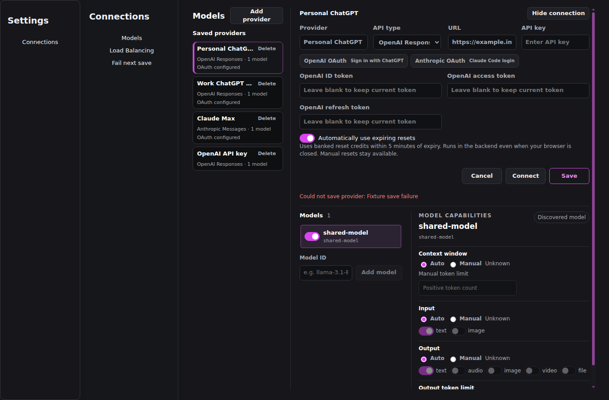
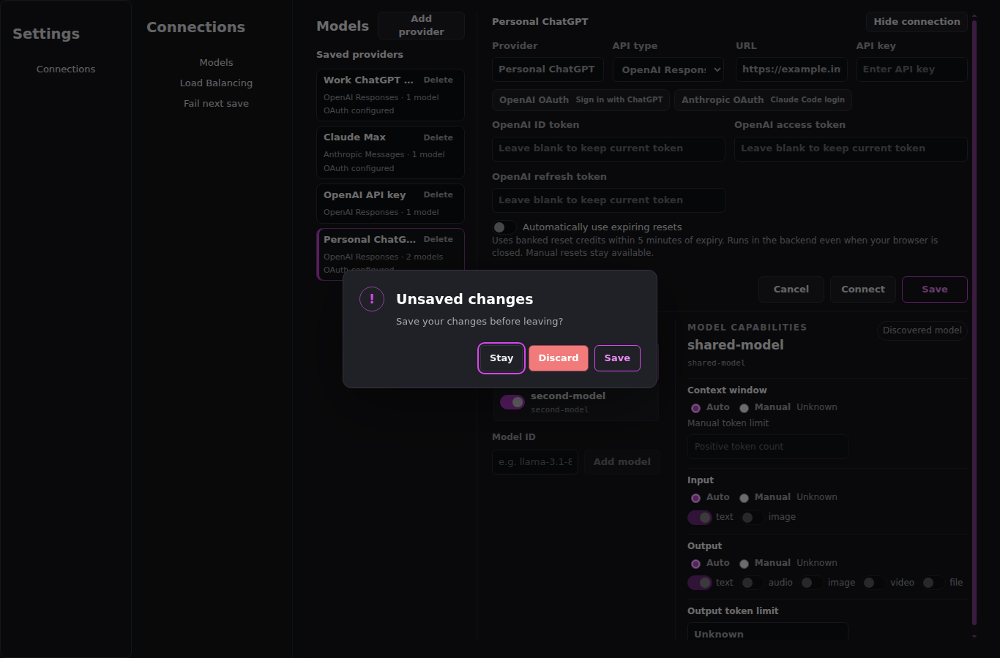

Connection disclosure correction — ba9995c / candidate
bundle-before-1366-collapsed bundle-1366-collapsed
bundle-1366-collapsed bundle-before-1366-expanded
bundle-before-1366-expanded
bundle-1366-expanded bundle-before-1000-collapsed
bundle-before-1000-collapsed bundle-1000-collapsed
bundle-1000-collapsed bundle-before-1000-expanded
bundle-before-1000-expanded bundle-1000-expanded
bundle-1000-expanded
bundle-before-480-collapsed
bundle-480-collapsed bundle-before-480-expanded
bundle-before-480-expanded bundle-480-expanded
bundle-480-expanded
hidden-draft-1366
enabled-focus-1366
save-error-1366
unsaved-1366